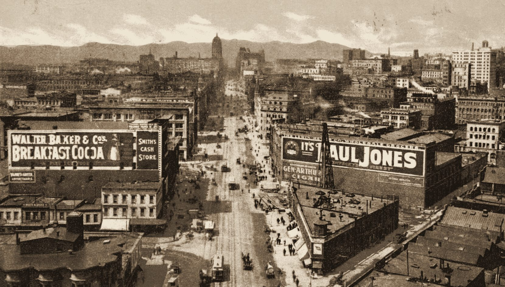
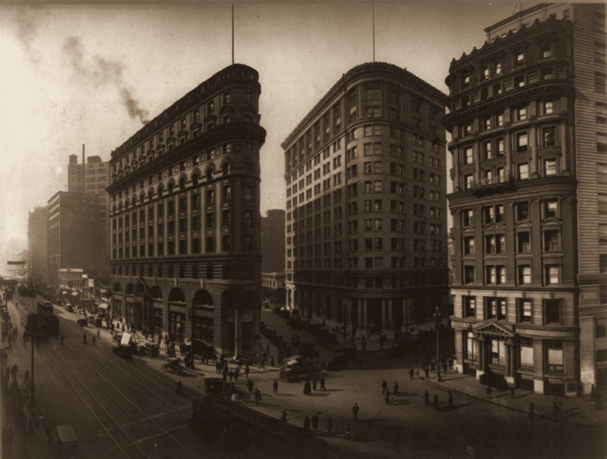
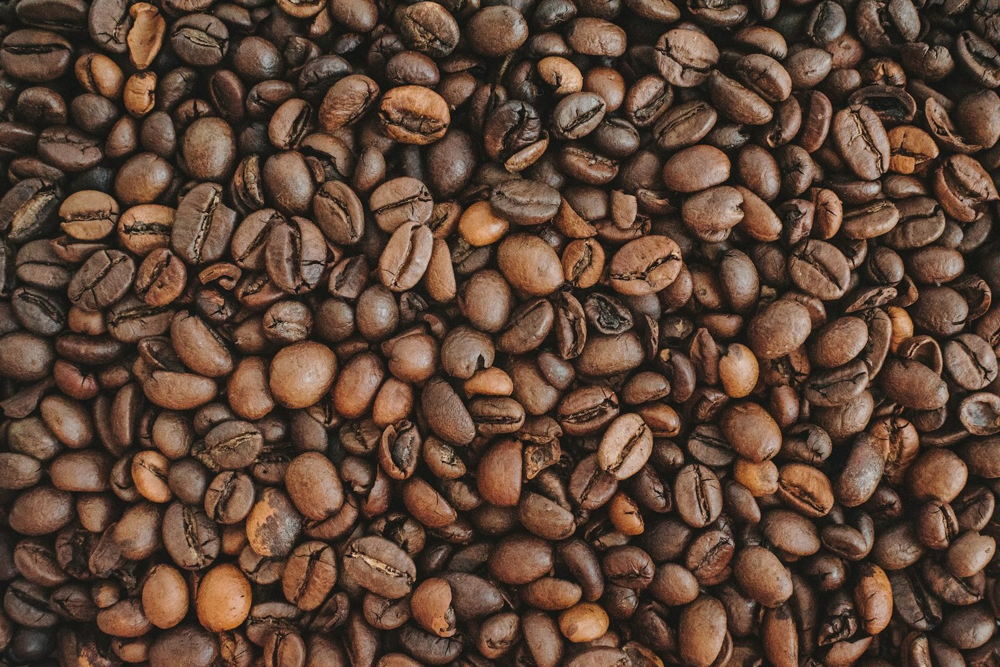
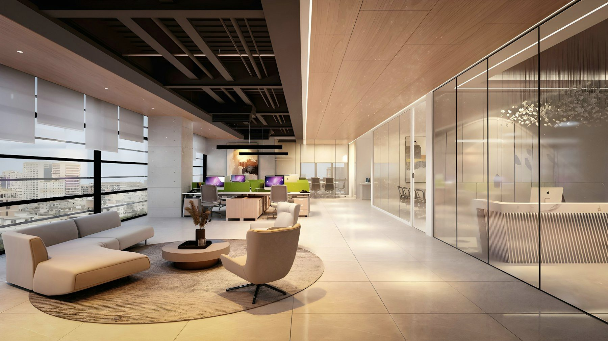
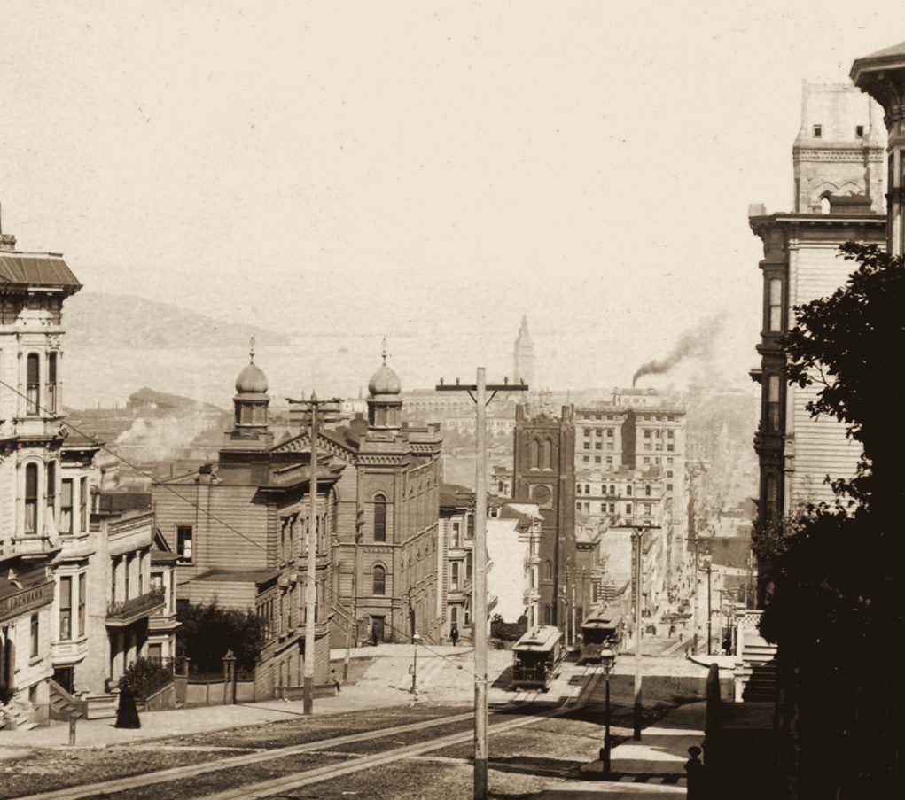

A research briefing on CDIC's heritage, its market, and the opportunities to strengthen, modernize and grow the business.
View up Powell Street from the Fairmont, c. 1920. Library of Congress, LCCN 96514400 (public domain). San Francisco context only. Not CDIC premises.
“A business with a remarkable history, an established presence in a valuable market, and meaningful opportunities to strengthen how we present ourselves, serve customers and pursue growth.”
This briefing brings together research across five areas: CDIC's historical records, the Bay Area corporate coffee market, the competitive landscape, Franke A1000 service standards, and modern brand and business systems.
It's a starting point for a conversation. The findings are drawn from public records and published sources, and the ideas are offered for discussion.
Details shared by CDIC ownership, accepted as context.
ResearchFound in outside sources: directories, filings, market reports. Traceable and cited.
RecommendationA suggestion for discussion. Nothing here is decided until ownership approves it.
To verifyDetails to confirm together from company records or family memory.
Historical leads are presented as leads. Contemporary photographs are representative, and no image in this briefing is AI-generated.

What the public record shows, and where more of the story is waiting.
Market Street, San Francisco, early 1900s. Detroit Photographic Co. postcard, NYPL Digital Collections (public domain). Context only. Not CDIC premises.
Each entry is a documented lead. Connecting them into one continuous story is the next step, with family records.
A Digger Archives leaflet lists "Oh's (California Direct Importing Co.), 2651 Mission at 23rd", selling flour in 100-lb sacks. "Oh's" may be a family or trading name, and the family's memory can tell us more.

"Banking Center," San Francisco, c. 1920. Library of Congress, LCCN 2002711388 (public domain). Context only. Not CDIC premises.
No public archive has yet surfaced a photograph of a CDIC storefront, vehicle or installation, which makes the family's own collection the richest source for the story.
Workplaces are investing in the on-site experience, and coffee is at the center of it.
Photo: Scott K / Unsplash. Representative imagery, not a CDIC installation.
New leases, expansions and renovations are the moments when companies choose a coffee partner. Hybrid schedules favor equipment sized for peak days and programs that flex on quieter ones. Coffee supports the workplace experience; it shouldn't be sold as a cure for return-to-office or retention.
New offices and expansions · renovations · replacing an unreliable provider · client-facing upgrades
Who's involved in the decisionWorkplace experience · facilities · office managers · procurement · finance · IT for connected equipment
A Franke A1000 is rated for up to 300 cups a day. Sizing is based on real daily drinks, peaks and layout, not headcount alone.
Photo: Kevin Butz / Unsplash. Representative.
Large providers compete on breadth. Roasters compete on coffee. Automated programs compete on convenience. Few combine all three with a premium installation and a personal relationship.
A working positioning line for CDIC: a refined coffee bar experience inside the workplace, backed by accountable local service.
A San Francisco story few providers can tell.
Swiss Franke systems, thoughtfully designed into the space.
Quality the customer can taste in every cup.
Clear standards, documented care, prompt follow-through.
A local partner who knows each account by name.
Each ingredient exists somewhere in the market. The combination, shown through real installations, documented service and permissioned references, is what competitors find hard to copy. Proof is the advantage, not the slogan.

Photo: Anastasiia Chepinska / Unsplash
The Franke A1000 at the core: programmable recipes, barista-quality drinks, rated for up to 300 cups a day.
A coffee program built around freshness, the quality signal buyers notice first.
A history of serving major corporate workplaces. With permission, these become CDIC's strongest proof.
A name in the city's records for about a century, rare among workplace coffee providers.
OpportunityPresent these strengths clearly, consistently and with proof, and they become a competitive edge.
Tasting → demo → proposal → pilot where warranted → install → review & renew
Photo: nameless 3791 / Unsplash. Representative.
One register for each site and station: serial number, install date, warranty and full service history.
The A1000 calls for at least daily cleaning and technician service every 6 months or 80,000 drinks, scheduled and recorded at every site.
Coffee, milk and cups tracked per site and reordered against real usage.
Customers request service through one channel, get a prompt acknowledgment, and see it resolved.
GoalEvery site, machine and request is documented, so every customer gets the same standard of care.

Photo: Aalo Lens / Unsplash. Representative workplace.
Who CDIC is today, what it offers, where it serves, how to get in touch.
Inquiries, proposals and renewals tracked in one place, using GoHighLevel, which DGM already runs.
Inquiry acknowledgments, proposal reminders, service updates and renewal prompts.
Test GoHighLevel side by side with a field-service tool (Zoho FSM or Jobber) on one real account.
Existing accounting stays in place, with one source for invoices.
No custom apps or new subscriptions until a real need is proven.
Market Street, early 1900s. Detroit Photographic Co., NYPL (public domain). Context only. Not CDIC premises.
Today, searches for the company mostly return third-party records and customs listings. A company-controlled presence puts CDIC's heritage, offer and service front and center.
Actual installations, people and process, photographed with each site's permission.
A one-page capabilities sheet, an 8–10 slide deck, readiness checklists and care guides.
Archival finds and family records, published with provenance and permission.

California St. from Nob Hill toward the Ferry Building and Bay, c. 1903. H.C. White Co. stereograph, NYPL (public domain). Context only.
Walk through these findings together, confirm company details, and gather brand and history materials.
One register for accounts and equipment, one channel for service requests, and care routines documented per site.
Define service packages and standards, and confirm qualified Franke technical coverage.
Website, capabilities materials, real photography and the heritage story.
Reconnect relationships, build referral partners and target new offices and renovations.
Whatever exists is enough to start, whether that's a folder, a notebook or conversation.
The approved company name, entity and how CDIC wants to be described.
Which relationships may be referenced publicly, with permission.
Installed Franke models and configurations, serials and warranty records.
Franke relationship, service partners and maintenance records.
Roaster, blends and recipes that define the CDIC experience.
Visit routines, daily-care arrangements and response expectations.
Domains, email, logos, existing materials and photography.
Sites where installations could be photographed with permission.
Photos, letterhead, invoices, signs, and the story of "Oh's" and the move into coffee.
Which of these opportunities feel most worth pursuing first?
A remarkable history, an established place in a valuable market, and real opportunities ahead. I'd welcome the chance to walk through this research, hear what it's missed, and choose together where to begin.
— Lo
Photo: nameless 3791 / Unsplash